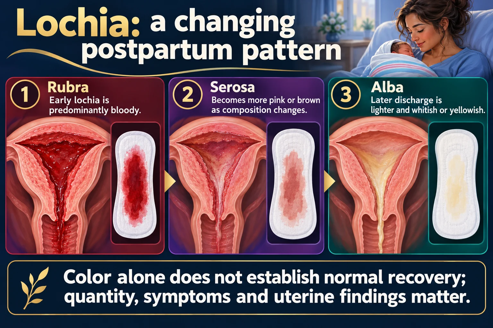

What normal lochia does over two weeks, the four causes of hemorrhage, and the complication where the fundus is firm and she is still bleeding to death.
A boggy fundus means massage it. A firm fundus with heavy bleeding means something else is wrong — a tear, a retained fragment, or a hematoma. Firm and still bleeding is not reassuring; it is a different diagnosis.

Lochia progression · tap to enlarge
Sources checked October 3, 2026:
Color alone does not establish normal recovery; quantity, symptoms and uterine findings matter.
Rubra
Early lochia is predominantly bloody.
Serosa
Becomes more pink or brown as composition changes.
Alba
Later discharge is lighter and whitish or yellowish.
Trend
Timing varies; assess amount and the overall recovery pattern.
Concern
Heavy bleeding, large clots, dizziness or a return to increasing bleeding needs assessment.
Infection clues
Foul odor, fever or uterine tenderness requires review.
| Amount on the pad in 1 hour | Called |
|---|---|
| A stain under about 2.5 cm (1 inch) | Scant |
| Under about 10 cm (4 inches) | Light |
| Under about 15 cm (6 inches) | Moderate |
| A saturated pad in an hour | Heavy — act |
Report: a foul smell, clots bigger than a plum, saturating a pad in an hour, or lochia that turns red again after it had lightened. Check underneath her — blood pools under the buttocks and the pad looks deceptively clean.
| T | Cause | What you find |
|---|---|---|
| Tone | Uterine atony — the most common by far | Boggy fundus, often displaced by a full bladder |
| Trauma | Laceration, hematoma, uterine inversion or rupture | Firm fundus, still bleeding |
| Tissue | Retained placental fragments | Bleeding that continues or restarts days later |
| Thrombin | A clotting problem — DIC, low platelets | Oozing from IV sites and gums too |
| Do | Action |
|---|---|
| At once | Call for help — at the same time as everything else, not after it |
| Feel the fundus | Boggy and midline → massage it, one hand supporting the lower uterus. Boggy and deviated to the right → empty the bladder first, then massage if still boggy. Firm but still bleeding → stop massaging and look for trauma, retained tissue or a clotting problem |
| Bladder | Empty it — void or catheter. A full bladder pushes the uterus up and to the side and stops it clamping |
| Lines and drugs | Large-bore IV and fluids; oxygen 10 L/min by nonrebreather mask; uterotonics per order — oxytocin first |
| Measure | Quantify the loss — weigh pads and drapes. Pulse, blood pressure, skin, level of consciousness, urine output |
| If it does not stop | Prepare for examination for tears or retained tissue, theater and blood products |
| Drug | Do not give if |
|---|---|
| Oxytocin | First line; watch for water intoxication on long infusions |
| Methylergonovine | Hypertension or preeclampsia — it raises blood pressure |
| Carboprost | Asthma — it causes bronchospasm |
| Misoprostol | Few restrictions; expect fever and shivering |
The pattern is the diagnosis: severe perineal or rectal pain that pain relief is not touching, a firm fundus, very little visible bleeding, and a pulse and blood pressure that say she has lost a lot of blood.
Do: report immediately, ice for the first 12 hours, catheterize if she cannot void, and keep her NPO in case it has to be opened.
Never accept “the pain is just from the stitches” when the pain keeps climbing and the analgesia is not working.
Fever after the first 24 hours is the opening move — a temperature of 38°C or more on two occasions after day one.
More likely after: a long time with ruptured membranes, many vaginal exams, cesarean birth, or retained tissue.
Nursing: IV antibiotics, fluids, and sit her upright — Fowler position encourages drainage rather than pooling.
Not to be confused with endometriosis — lining-like tissue growing outside the uterus, which is chronic, cyclic and not an infection. Endometriosis is on its own page →
Pregnancy and the postpartum period are hypercoagulable on purpose, which is what stops her bleeding to death — and what puts her at risk.
| DVT | Pulmonary embolism |
|---|---|
| One leg painful, swollen, warm | Sudden breathlessness |
| Calf tenderness | Sharp chest pain, worse on breathing in |
| Redness, a hard cord under the skin | Fast pulse, anxiety, a feeling of doom |
Prevention is nursing work: get her up and walking early, keep her hydrated, use the compression devices, and never leave legs dangling over the bed edge.
Never massage a suspected DVT.